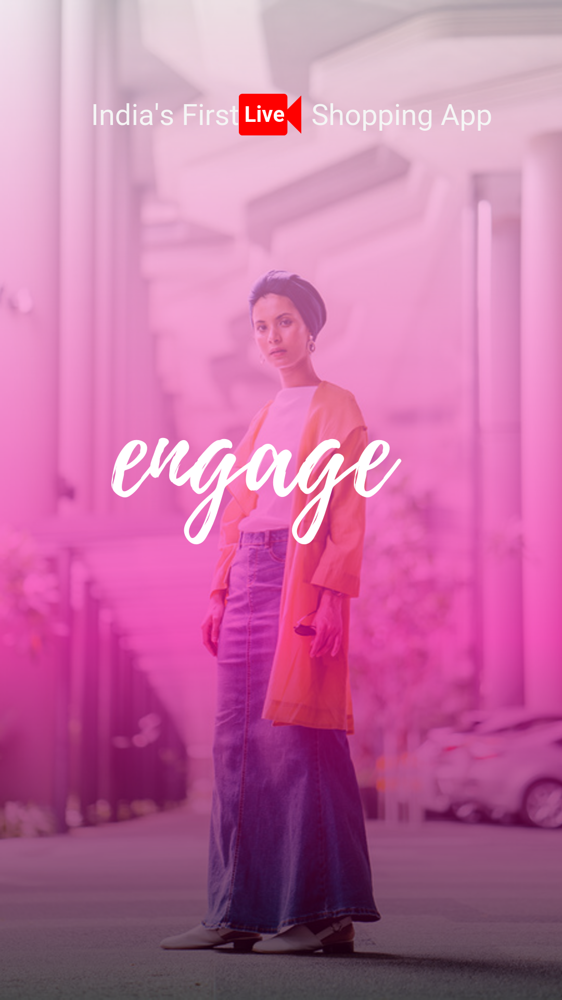

<ion-content fullscreen scroll-y="false">
    <ion-slides pager class="h-100">

        <ion-slide>
          
          <!-- <h2 style="position: absolute;bottom: 3%;color: #fff;">Slide 1</h2> -->
        </ion-slide>
      
        <ion-slide style="background: rgba(0,0,0,.3);">
          
          <!-- <h2 style="position: absolute;bottom: 3%;color: #333;">Slide 2</h2> -->
        </ion-slide>
      
        <ion-slide style="background: rgba(0,0,0,.3);">
          
          <!-- <h2 style="position: absolute;bottom: 3%;color: #333;">Slide 3</h2> -->
        </ion-slide>
      
      </ion-slides>
      <ion-button id="skip" color="light" size="small" fill="outline" [routerLink]="['/tabs']">{{ skipMsg }}</ion-button>
  </ion-content>